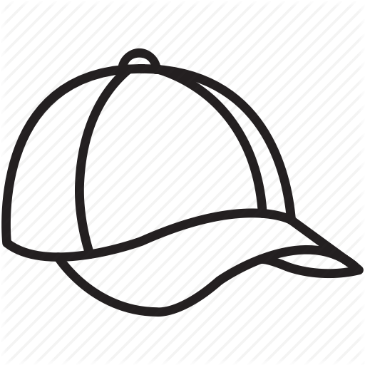

<!DOCTYPE html>
<html>
    <head>

        <script src="public/lib/jquery/dist/jquery.min.js"></script>


        <script type="text/javascript" src="public/lib/codemirror/lib/codemirror.js"></script>
        <script type="text/javascript" src="public/lib/codemirror/mode/javascript/javascript.js"></script>
        <script type="text/javascript" src="public/lib/codemirror/mode/xml/xml.js"></script>
        <script type="text/javascript" src="public/lib/codemirror/mode/css/css.js"></script>
        <script src="public/lib/sockjs-client/dist/sockjs.min.js"></script>
        <script src="public/lib/stomp-websocket/lib/stomp.min.js"></script>

        <script src="public/lib/angular/angular.min.js"></script>
        <script src="public/lib/angular-resource/angular-resource.min.js"></script>
        <script src="public/lib/angular-route/angular-route.min.js"></script>
        <script type="text/javascript" src="public/lib/angular-ui-codemirror/ui-codemirror.js"></script>
        <script src="public/lib/bootstrap/dist/js/bootstrap.min.js"></script>


        <script src="app.js"></script>

        <link rel="stylesheet" href="public/lib/bootstrap/dist/css/theme.min.css">
        <link rel="stylesheet" type="text/css" href="public/lib/codemirror/lib/codemirror.css">
        <link rel="stylesheet" type="text/css" href="public/lib/codemirror/theme/dracula.css">

        <style>
            .body-pad { padding-top: 70px; }


            .http-badge {
                background-color: lightgray;
                color: white;
                border-radius: 2px;
                padding: 2px 4px 1px 4px;
                margin: 2px;
                display: inline-block;
                font-size: 10px;
            }

            .method-GET {
                background-color: #1d950a;
            }

            .method-PUT {
                background-color: #2d949c;
            }

            .method-POST {
                background-color: #999c23;
            }

            .response-200 {
                background-color: #1d950a;
            }

            .CodeMirror {
                font-size: 10px;
                height: 250px;
            }


        </style>

    </head>
    <body ng-app="schicwp.httpcap" class="body-pad" >
    <nav class="navbar navbar-inverse navbar-fixed-top">
        <div class="container">
            <div class="navbar-header">
                <!--a class="navbar-brand" href="#">  </a>
                <a class="navbar-brand" href="#"> httPcap!</a-->
            </div>
        </div>
    </nav>

        <div class="container container-fluid">
            <ng-view></ng-view>

        </div>
    </body>
</html>
